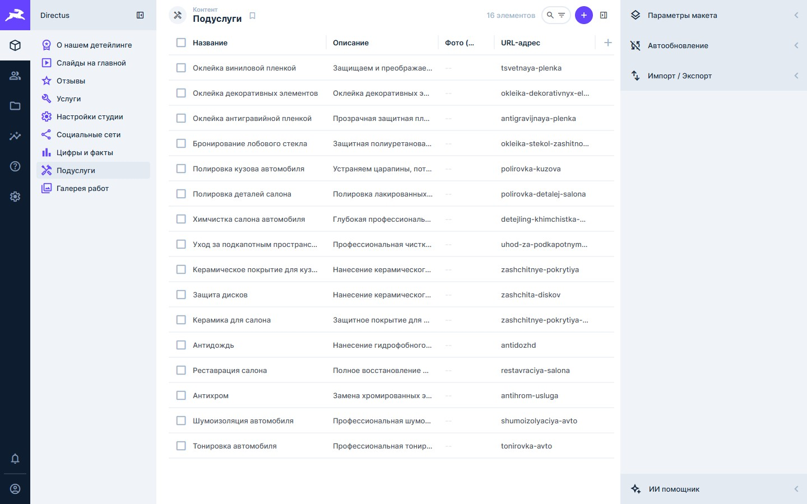
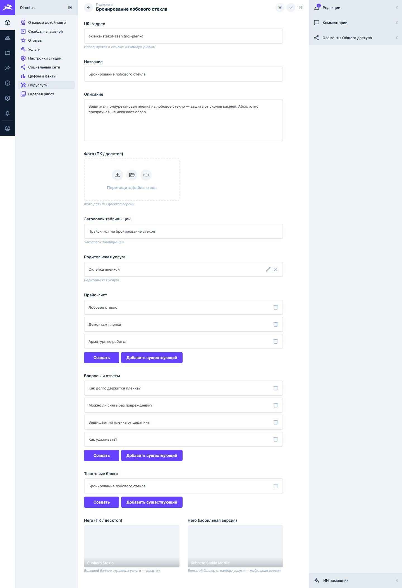
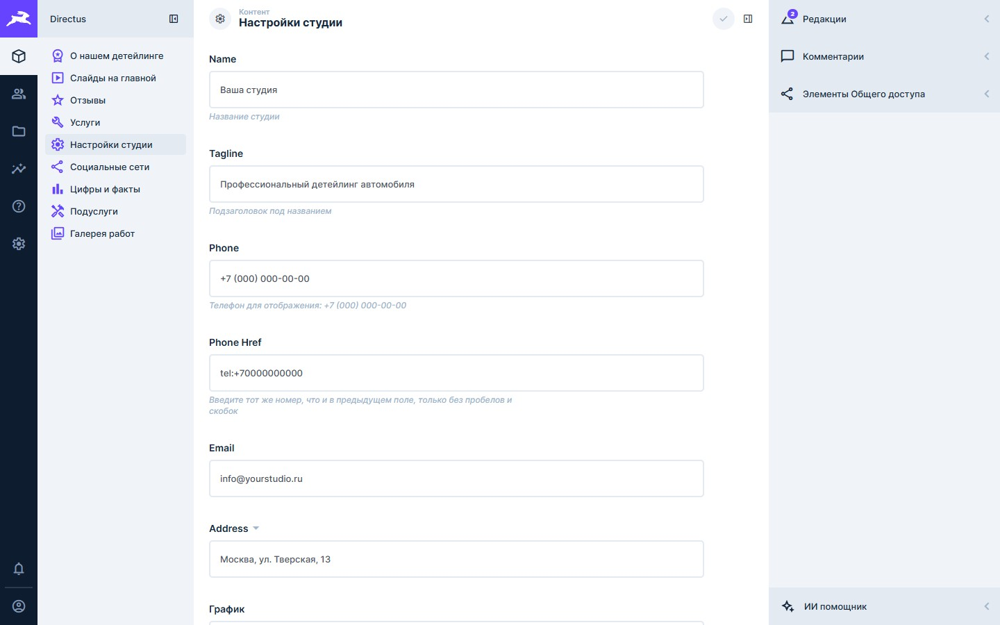
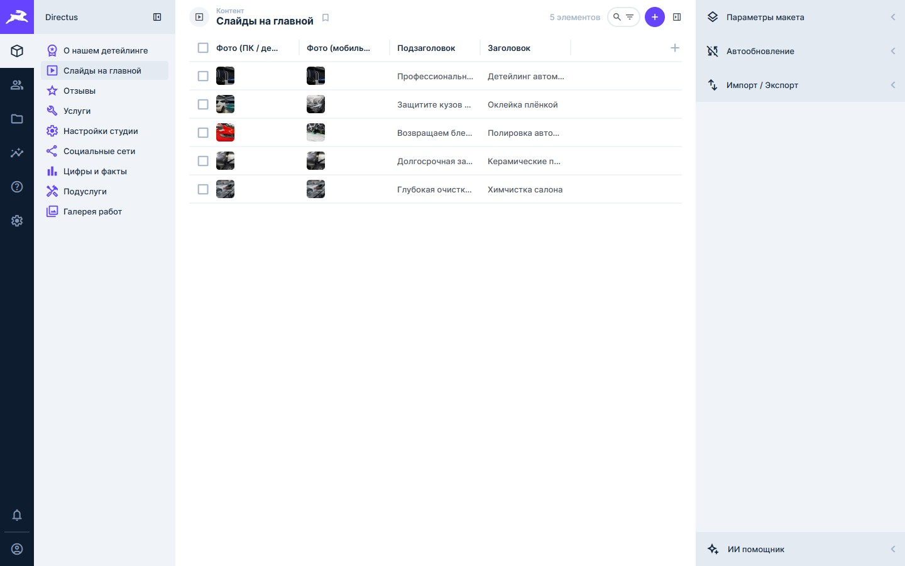
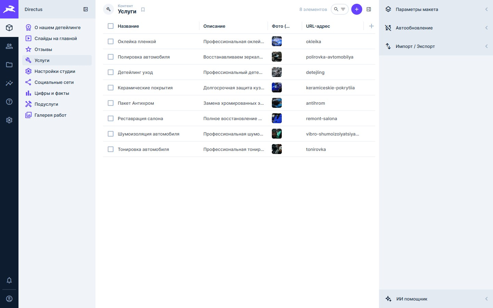
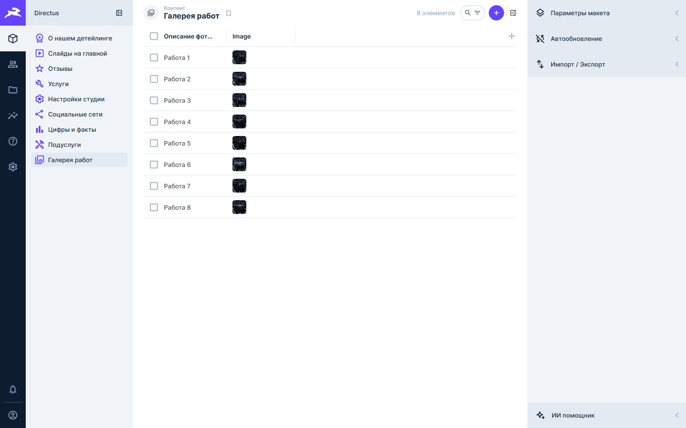
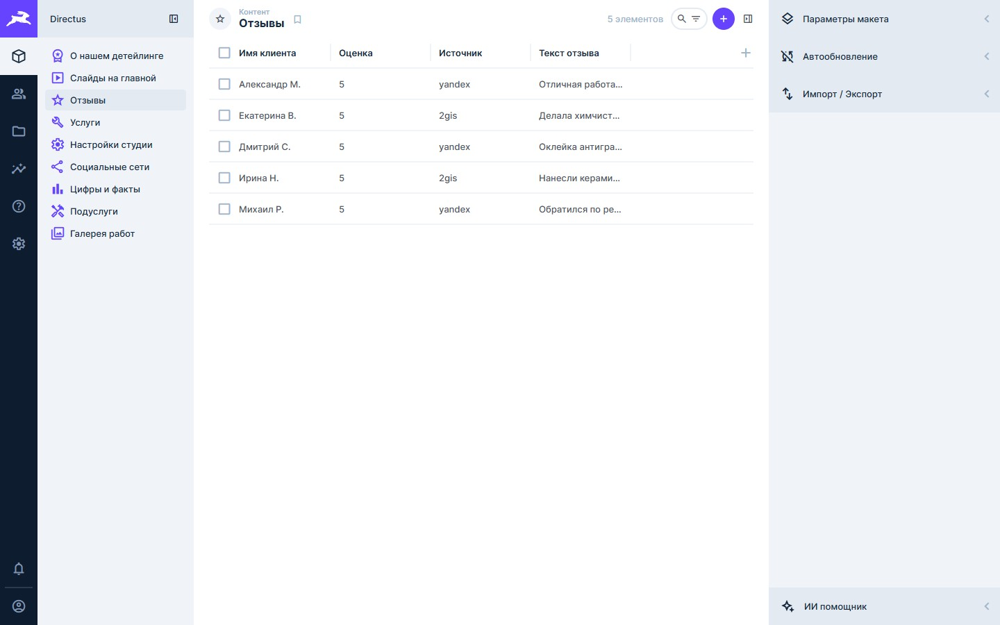

И чем наш подход удобнее — для вас как владельца и для ваших клиентов
Каждый визит — запрос к базе данных. Без дорогого хостинга сайт тормозит и теряет позиции.
44% всех взломанных сайтов в мире — на WordPress. Устаревший плагин = открытая дверь.
Обновил плагин — слетел дизайн. Обновил WP — перестала работать половина функций.
Форма — плагин. SEO — плагин. Галерея — плагин. Каждый стоит денег.
Десятки пунктов меню, непонятные настройки. Простое изменение — квест.
Поменять цвет кнопки или структуру страницы — звони разработчику, жди, плати.
Превращает шаблоны и данные в чистый HTML при каждом изменении. Никакой базы данных при загрузке.
Удобная панель управления контентом. Все тексты, фото, цены редактируются без знания кода.
| Критерий | WordPress | Наш стек |
|---|---|---|
| Скорость загрузки | Средняя, зависит от хостинга | Мгновенная — статичный HTML |
| Безопасность | Взламывают регулярно | Нечего взламывать |
| Обновления | Ломают сайт | Не нужны |
| Интерфейс панели | Перегружен, сложно найти | Только нужные разделы |
| Язык интерфейса | Частично на русском | Полностью на русском |
| Стоимость поддержки | Высокая | Минимальная |
| Плагины | Нужны, часть платные | Не нужны |
В каждой подуслуге — своя страница с названием, описанием, фото, прайс-листом и FAQ. Всё редактируется без разработчика.



Все контактные данные редактируются как обычная форма. Изменил — сохранил — данные обновились на сайте.

Каждый слайд — заголовок, подзаголовок и фото для ПК и телефона. Нажал на строку — изменил — сохранил.

Все услуги и подуслуги редактируются в панели. Каждая услуга: название, описание, фото, прайс, FAQ.

Добавляешь фото выполненной работы — оно появляется в галерее. Порядок меняется перетаскиванием.

Клиент оставил отзыв на Яндексе или 2ГИС? Добавляешь в панели: имя, текст, оценка, источник.
Нет лишних пунктов меню. Только разделы вашего сайта.
Интерфейс полностью на русском. Никакого английского жаргона.
Невозможно случайно сломать сайт. Редактируете только контент.
Всё что нужно — уже встроено и настроено под ваш сайт.
Панель управления открывается с любого устройства.
Нет обновлений плагинов, нет их конфликтов, нет регулярных платежей.
Обсудим детали и ответим на любые вопросы